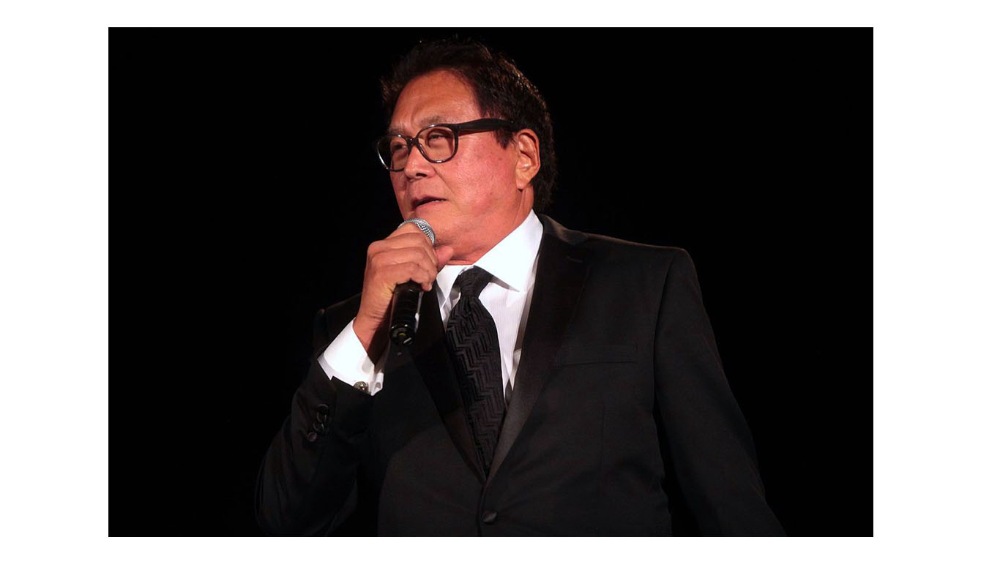

Robert kiyosaki
Robert Kiyosaki, auteur du best seller « Père Riche, Père Pauvre »

American businessman and author. Kiyosaki is the founder of Rich Global LLC and the Rich Dad Company
Here is time line of M.Robert Kiyosaki's life
-
1947 - born in Hilo, Territory of Hawaii, U.S ( age 74)
-
1965 - Completing his education, he started working on merchant ships,
which allowed him to travel to various parts of the world journeys exposed him to new cultures
and new ways of life. Furthermore, he witnessed extremes of poverty that people faced around the world.
These voyages left a profound impact on him.
-
1972 - during the Vietnam War, he served as a helicopter gunship pilot in the Marine Corps.
For his service, he was awarded with the Air Medal. Two years later, he left the Marine Corps.
However, instead of returning to Hawaii he moved to New York.
-
1974-1978 - he took up the profile of a salesman for Xerox Corporation selling copy machines.
Meanwhile in 1977, having saved enough money, he started a company of his own that
brought forth to the market the first nylon and Velcro ‘surfer’ wallets.
-
1980 - started a retail business that made T-shirts, hats, wallets, and bags for heavy metal rock bands.
-
1985 - Kiyosaki cofounded the Excellerated Learning Institute, a business education company
teaching entrepreneurship, investing, and social responsibility.[14] Around this time, he married his second wife,
Kim, who had already invested in some real estate in Phoenix. In 1994, Kiyosaki sold the education company
-
1992 - Kiyosaki published his first book, If You Want to Be Rich and Happy, Don't Go To School. In his book,
he encouraged parents not to send their children to college and instead to enter the real estate business.
-
1997 - In 1997, Kiyosaki launched Cashflow Technologies, Inc., a business and financial education company
that owns and operates the Rich Dad and Cashflow brands. Kiyosaki partnered with Amway to promote his book.
As per an interview with Forbes, Kiyosaki's main earnings come through franchisees of the Rich Dad seminars.
“If you’re the kind of person who has no guts, you just give up every time life pushes you.
If you’re that kind of person, you’ll live all your life playing it safe, doing the right things,
saving yourself for something that never happens. Then, you die a boring old man.”
― Robert T. Kiyosaki, Rich Dad, Poor Dad